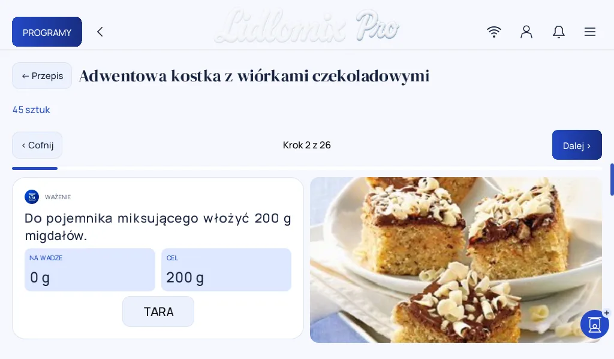

03 / Geräteprüfungen ·
Von der Datei zum Kochen
Der zweite Schritt im Adventsschokoladenscheibenrezept besteht darin, die Mandeln zu wiegen. Ich wollte, dass ein Bildschirm zeigt, wie viel hinzuzufügen ist und wie viel bereits in der Schüssel war.
Offenes Rezept

Von der Karte aus kann ich das Rezept durchgehen. In diesem Beispiel ist der zweite Schritt das Wiegen von Mandeln.
Gewichtung im Verlauf einer Rezeptur

Beim Wiegen zeigt Lidlomix Pro den Messwert des Connect-Sensors neben der im Rezept benötigten Menge an. Bei meinem Gerät ändert sich der Messwert in Schritten von 5 g. Die Tara-Funktion setzt die Anzeige vor der nächsten Zutat auf null. Ich habe am Gerät auch Drehzahl, Temperatur, Countdown und Intervallbetrieb geprüft. Kompatible Rezeptschritte können das Gerät jetzt steuern.
Floating-Button

Ich habe drei Abkürzungen zur Hand: Gewicht, Turbo und Waschen.
Warum das Rezept ein eigenes Format bekam
Ich konnte eine Word-Datei lesen, musste aber noch Zeit, Geschwindigkeit und Klingenrichtung von Hand eingeben. Eine JSON-Datei speichert diese Einstellungen für jeden Schritt. Nach dem Importieren und Auswählen des Rezepts Anpassen kann die App beispielsweise einen Knetschritt mit bereits eingestellter Zeit anzeigen.
Ich habe auch versucht, chatgpt im browser von connect zu öffnen. Der Browser lief langsam auf dieser Hardware, also bewegte ich die Rezeptvorbereitung auf das Telefon. Ich speichere eine Datei vom Assistenten und die mobile App sendet sie über das lokale Wi-Fi-Netzwerk an den Roboter. Das ist der Workflow, den ich jetzt im täglichen Gebrauch teste.